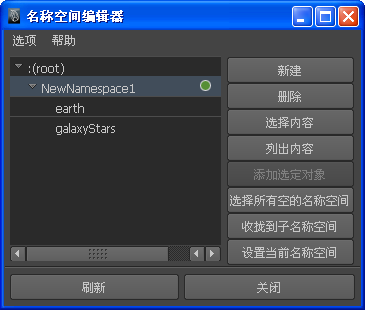
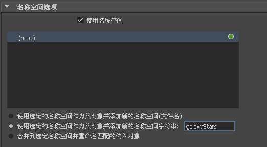
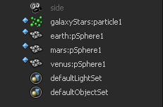

可以在“名称空间编辑器”(Namespace Editor)中、引用文件或将文件导入场景时创建名称空间。如果在引用或导入文件时创建名称空间，默认情况下将文件名用作名称空间。
您还可以在命令行中使用 -namespace -add "newNs" MEL 命令来创建名称空间。
创建名称空间之后，可以使用“名称空间编辑器”(Namespace Editor)编辑该名称空间。请参见编辑名称空间。
使用“名称空间编辑器”(Namespace Editor)创建名称空间
使用“名称空间编辑器”(Namespace Editor)创建名称空间
- 通过选择“窗口 > 常规编辑器 > 名称空间编辑器”(Window > General Editors > Namespace Editor)打开“名称空间编辑器”(Namespace Editor)。
“名称空间编辑器”(Namespace Editor)将出现。
- 单击“新建”(New)。

Maya 将创建一个新的名称空间。
- 若要重命名新的名称空间，请双击它。
“重命名名称空间”(Rename Namespace)窗口将出现。
- 在“重命名名称空间”(Rename Namespace)窗口中键入一个新名称，然后单击“确定”(OK)。
在引用或导入时创建名称空间
当您创建文件引用或导入文件时，可以创建引用和导入对象使用的名称空间。
在引用或导入文件时创建名称空间
- 在父文件中，选择“文件 > 创建引用”(File > Create Reference)
>
 。
。
“引用选项”(Reference Options)窗口将出现。
- 在“名称空间选项”(Namespace Options)中，启用“使用名称空间”(Use namespaces)。
- 通过选择下列选项之一指定如何生成名称空间：
- “使用选定的名称空间作为父对象并添加新的名称空间(文件名)”(Use selected namespace as parent and add new namespace (file name))，以将文件名作为名称空间的前缀。
- “使用选定的名称空间作为父对象并添加新的名称空间字符串”(Use selected namespace as parent and add new namespace string)，以将文本字符串作为名称空间的前缀。在提供的字段中键入字符串。
- “合并到选定名称空间并重命名匹配的传入对象”(Merge into selected namespace and rename incoming objects that match)，以将对象的名称空间与现有名称空间合并。
如果出现重复的名称空间，将合并这些名称空间，并且重复的对象名称将以递增的数字作为后缀。使用此选项可以避免在每次引用或导入具有相同名称空间的对象时累积新的名称空间。
- 如果要为名称空间指定唯一名称或文本字符串（而不是文件名），请选择“新名称空间字符串”(New Namespace String)，然后在显示的字段中键入字符串。

- 单击“引用”(Reference)。
“文件浏览器”(File Browser)将显示。
- 导航到要引用的文件，然后单击“引用”(Reference)。
将文件引用到父场景。如果打开“大纲视图”(Outliner)，则可以看到引用对象的对象名称全部都以引用文件的名称或您的名称空间文本字符串为前缀。
可以通过使用“名称空间编辑器”(Namespace Editor)、“引用编辑器”(Reference Editor)或 MEL 命令编辑名称空间。有关详细信息，请参见的名称空间编辑器概述、引用编辑器和使用文件引用。
从命令行创建名称空间
您可以在命令行中使用以下 MEL 命令来创建名称空间。在命令行中使用 -add "newNS" 标志与 -namespace 命令来创建名称空间：
- 使用 -namespace -add "newNs" 创建新的名称空间（如果该名称空间尚不存在）。
- 使用 -namespace -add "newNs1:newNs2" 创建 newNs2 名称空间及其父对象 newNs1（如果其尚不存在）。
您还可以在重命名节点时通过指定新节点的名称空间名称来创建名称空间。
例如：
使用 rename "ns1:obj1" ":newNs2:obj1" 创建新的 newNs2 名称空间（如果其尚不存在）。